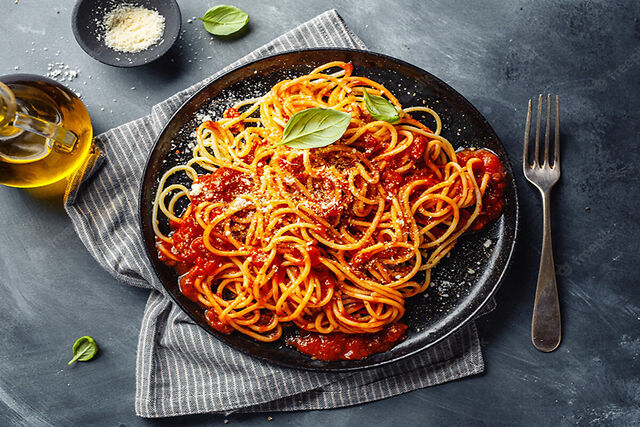

Популярные рецепты

Паста с томатным соусом
Нежная паста с насыщенным томатным соусом.

Курица Терияки
Японское блюдо с нежным соусом терияки.
Нежная паста с насыщенным томатным соусом.
Японское блюдо с нежным соусом терияки.